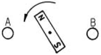
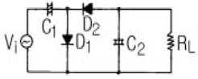
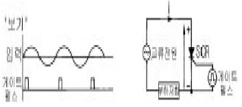
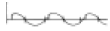
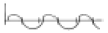
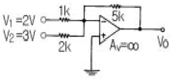
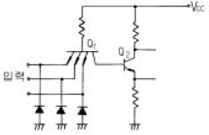
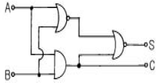
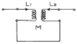

전자기기기능사 (2005-04-03 기출문제)
1과목: 전기전자공학
1. 그림과 같이 반시계 방향으로 회전하는 자석이 있다. 자석의 N극이 도체 A의 부근을 통과할 때 A, B도체에 어떤 방향의 기전력이 유도되는가? (단, 茁는 지면에서 나오는 방향, 雋는 지면에 들어가는 방향이다. )(문제 복원 오류로 내용이 정확하지 않습니다. 한자(茁,雋 대신에 들어가야할 내용을 아시는 분들께서는 오류신고를 통하여 작성 부탁 드립니다.)

- A 는 茁, B는 茁
- A 는 雋, B는 雋
- A 는 雋, B는 茁
- A 는 茁, B는 雋
(정답률: 45%)

2. 1牆의 저항 10개를 직렬로 접속할 때의 합성저항은 병렬로 접속할 때의 합성저항의 몇 배인가?
- 0. 1
- 1
- 10
- 100
(정답률: 54%)
3. 전장 중에 전하를 놓았을 때 전하에 작용하는 힘은 무엇인가?
- 전장의 세기
- 기전력
- 전위
- 전류
(정답률: 66%)
4. 포토 커플러(photo coupler)의 특성에 대한 설명으로 옳은 것은?
- 입·출력간은 전기적으로 절연되어 있다.
- 출력신호에서 입력신호로 영향이 있다.
- 논리소자와의 접속이 곤란하다.
- 응답속도가 비교적 느리다.
(정답률: 57%)
5. 전기석과 같은 결정체를 가열하거나 또는 냉각하면 결정의 한쪽면에 + 전하가 발생하고 다른쪽 면에 - 전하가 발생되는 현상을 무슨 효과라 하는가?
- 압전효과
- 초전효과
- 홀효과
- 광전효과
(정답률: 46%)
6. 회로에서 부하 RL의 조건은 어떤 조건이어야 하는가?

- 고임피던스
- 저임피던스
- 저인덕턴스
- 저커패시턴스
(정답률: 48%)
7. 그림과 같은 회로에서 SCR의 게이트 펄스가 보기와 같을 때 부하에 흐르는 부하전류는?



(정답률: 59%)
8. 그림과 같은 이상적인 OP Amp에서 출력전압 Vo를 구하면 몇 V 인가?

- -17. 5
- 18. 5
- 19. 5
- -20. 5
(정답률: 62%)
9. 비포화 논리회로는?
- CTL
- RTL
- CML
- DCTL
(정답률: 51%)
10. 피어스 B-E형 수정발진회로는 컬렉터-이미터간의 임피던스가 어떻게 될 때 가장 안정한 발진을 지속하는가?
- 용량성 혹은 유도성
- 저항성
- 용량성
- 유도성
(정답률: 61%)
11. 콘덴서 입력형 전파 정류회로의 입력 전압이 실효값으로 12 V일 경우 정류 다이오드의 최대 역전압은 몇 V 인가?
- 12
- 17
- 24
- 34
(정답률: 42%)
12. 단일 동조 고주파 증폭기의 이득은 LC 회로의 공진주파수에서 최대가 된다. 그 이유는?
- 직렬공진회로이기 때문에
- 병렬공진회로이기 때문에
- 선택도 Q 가 낮으므로
- 내부의 극간용량 때문에
(정답률: 48%)
13. 전력에 대한 설명으로 옳은 것은?
- 전류에 의해서 단위시간에 이루어지는 힘의 양을 말한다.
- 전류에 의해서 단위시간에 이루어지는 열량의 양을 말한다.
- 전류에 의해서 단위시간에 이루어지는 전하의 양을 말한다.
- 전류에 의해서 단위시간에 이루어지는 일의 양 즉, 일의 공률을 말한다.
(정답률: 45%)
14. TTL 게이트회로의 일부분이다. 다이오드의 사용 목적은?

- 트랜지스터 보호
- 클램핑
- 클리퍼
- 리미터
(정답률: 46%)
15. 그림과 같은 회로의 명칭은?

- 동시회로
- 반동시회로
- Exclusive-OR
- Half Adder
(정답률: 39%)
2과목: 전자계산기일반
16. 8100 kHz 반송파를 5 kHz의 주파수로 진폭 변조하였을 때 그 주파수 대역은 몇 kHz 대인가?
- 5
- 10
- 8100±5
- 8100±10
(정답률: 67%)
17. 10진수 15(10)를 BCD 코드로 나타낸 것으로 올바른 것은?
- 00010101(BCD)
- 00011010(BCD)
- 10100101(BCD)
- 10101010(BCD)
(정답률: 58%)
18. 컴퓨터에서 각 구성 요소 간의 데이터 전송에 사용되는 공통의 전송로를 무엇이라 하는가?
- 버스(bus)
- 포트(port)
- 채널(channel)
- 인터페이스(interface)
(정답률: 66%)
19. "마이크로프로세서에서 버스 요구 사이클(bus request cycle)은 주변장치가 CPU로 부터 버스 사용을 허락받아 CPU의 간섭없이 독자적으로 메모리와 데이터를 주고 받는 방식인 ( ) 동작에 필요하다. " ( )안에 들어갈 용어는?
- request
- cycle
- DMA
- MAR
(정답률: 77%)
20. 마이크로컴퓨터 내부에서 마이크로프로세서와 주기억장치 및 각 주변장치 모듈 간에는 버스(BUS)를 통해 정보를 전달한다. 이 버스에 해당되지 않는 것은?
- data bus
- address bus
- register bus
- control bus
(정답률: 65%)
21. 2진 리플카운터에서 T 플립플롭을 3단으로 연결하였을 때 계수할 수 있는 가장 큰 수는?
- 3
- 6
- 7
- 8
(정답률: 45%)
22. 기억된 정보를 읽기는 자유롭지만 내용을 바꾸어 넣을 수 없는 기억소자는?
- ROM
- RAM
- SRAM
- DRAM
(정답률: 74%)
23. 리플레시가 필요한 메모리는?
- D-RAM
- S-RAM
- CCD
- Shift-register
(정답률: 78%)
24. 순서도 작성 시 지키지 않아도 될 사항은?
- 기호는 창의성을 발휘하여 만들어 사용한다.
- 문제가 어려울 때는 블록별로 나누어 작성한다.
- 기호 내부에는 처리 내용을 간단명료하게 기술한다.
- 흐름은 위에서 아래로, 왼쪽에서 오른쪽으로 그린다.
(정답률: 82%)
25. 순서도(Flow chart)에 사용되는 기호 중 프로그램의 시작과 끝을 나타내는 기호는?
(정답률: 57%)
26. 다음 중 주변장치에 해당되는 것은?
- 연산 장치
- 보조 기억 장치
- 제어 장치
- 주기억 장치
(정답률: 75%)
27. Excess-3코드(3초과 코드) 표현에 의한 10진수 5의 값은?
- 0101
- 1000
- 1010
- 1111
(정답률: 49%)
28. 중앙처리장치(CPU) 구성에 해당되는 것은?
- 보조 기억 장치
- 제어 장치
- 입력 장치
- 출력 장치
(정답률: 70%)
29. 대전된 도체 사이에 작용하는 정전 흡인력 또는 반발력을 이용한 계기는?
- 열전형 계기
- 정류형 계기
- 정전형 계기
- 유도형 계기
(정답률: 68%)
30. 다음 중 고속 스위칭 트랜지스터로서의 구비 조건은?
- 상승 시간이 짧을 것
- 상승 시간이 길 것
- 상승 및 하강 시간이 길 것
- 하강 시간이 길 것
(정답률: 68%)
3과목: 전자측정
31. 1차 코일의 인덕턴스 4[mH], 2차 코일의 인덕턴스 10[mH]를 직렬로 연결했을 때 합성 인덕턴스는 24[mH]였다. 이들 사이의 상호 인덕턴스는?

- 2[mH]
- 5[mH]
- 10[mH]
- 19[mH]
(정답률: 64%)
32. 피측정 주파수를 계수형 주파수계로 측정하였더니 1분동안에 반복 회수가 72,000회 였다면 피측정 주파수는 몇 Hz 인가?
- 300
- 600
- 900
- 1,200
(정답률: 86%)
33. 볼로미터로 측정할 수 없는 것은?
- 고주파 전압 측정
- 고주파 전류 측정
- 고주파 파형 측정
- 마이크로파 전력 측정
(정답률: 55%)
34. 참값이 50[V]인 전압을 측정하였더니 51. 4[V] 였다. 이 때의 오차 백분율은?
- 1. 3[%]
- 1. 4[%]
- 1. 5[%]
- 2. 8[%]
(정답률: 66%)
35. 정밀급으로 많이 사용되며 교류, 직류에 사용하여도 동일 지시를 하지만 외부 자계의 영향을 받기 쉬운 계기는?
- 가동철편형
- 전류력계형
- 정전형
- 가동코일형
(정답률: 58%)
36. 1/4 [W]형 250 [kΩ] 저항기에 흘릴 수 있는 전류의 최대값은?
- 0. 1[㎃]
- 1 [㎃]
- 10 [㎃]
- 100 [㎃]
(정답률: 38%)
37. 고주파의 주파수 측정에 사용되지 않는 측정법은?
- 브리지법
- 흡수형 파장계
- 레헤르선 파장계
- 헤테로다인 주파수계
(정답률: 37%)
38. 측정자의 부주의에 의하여 발생하는 것으로서 측정기의 눈금을 잘못 읽거나, 부정확한 조정, 부적당한 적용 및 계산의 실수 등에 의하여 발생하는 오차는?
- 개인오차
- 계통오차
- 우연오차
- 측정오차
(정답률: 73%)
39. C-M형 전력계에서 진행파 전력을 Pf , 반사파 전력을 Pr이라 했을 때, 측정하고자 하는 부하의 전력은?
- Pf (f) Pr
- Pf/Pr
- Pr/Pf
- Pf - Pr
(정답률: 33%)
40. Q 미터의 구성에서 측정 중에 주파수의 잡음이 생기지 않도록 다른 부분과 차폐시키는 부분은?
- 고주파 발진부
- 입력 감시부
- 동조 회로부
- Q 지시부
(정답률: 40%)
41. 라스터가 가로 한 줄로 되었을 때 고장 진단의 대상이 아닌 것은?
- 수직발진관의 그리드 전압
- 적분회로의 동기신호 전압파형
- 수직출력관의 그리드 전압파형
- 수직발진관의 플레이트 전압
(정답률: 36%)
42. 자기 왜형 진동자를 만들 때 철심을 엷은 판 모양으로 하고 절연하여 겹쳐 쌓아 만드는 이유는?
- 공진 주파수 조절을 위해서
- 맴돌이 전류를 적게 하기 위해서
- 진동을 크게 하기 위해서
- 제작비를 적게 들이기 위해서
(정답률: 58%)
43. 주사 전자 현미경의 특징에 해당하는 사항이 아닌 것은?
- 광학 현미경에 비하여 심도가 깊다.
- 입체적인 관찰이 가능하다.
- 시료 준비가 쉽다.
- 500배 이상의 고배율 적용이 불가능하다.
(정답률: 58%)
44. VTR에서 테이프 구동형 전동기의 속도를 수직 동기 신호의 위상에 일치시키기 위하여 테이프에 넣는 신호는?
- 서보계 제어 신호
- 트랙 조정 신호
- 주사 보정 신호
- 휘도 신호
(정답률: 34%)
45. 다음 중 잔류편차가 없는 제어 동작은?
- ON - OFF동작
- P동작
- PD동작
- PI동작
(정답률: 43%)
4과목: 전자기기 및 음향영상기기
46. 전자 현미경의 전자렌즈 세기를 결정하는 것은?
- 자장의 세기
- 전자의 세기
- 분해능의 세기
- 배율의 세기
(정답률: 53%)
47. 고주파 가열을 이용한 것으로 유도가열과 관련된 것은?
- 목재의 건조 및 접착
- 조리 또는 농,어산물의 가공
- 바늘 끝의 야금
- 생란의 살충 및 건조
(정답률: 38%)
48. 테이프 리코더(tape recorder) 구성에서 테이프의 운동을 조절하며, 일정한 속도로 회전하는 축을 무엇이라고 하는 가?
- 핀치 롤러
- 테이프 가드
- 플라이 휠
- 캡스턴
(정답률: 60%)
49. 녹음기에서 마스킹 효과를 이용하여 히스 잡음을 줄이기 위하여 고안된 것은?
- 캡스턴(capstan)
- 돌비 시스템(dolby system)
- 캔틸레버(cantilever)
- 니들(needle)
(정답률: 66%)
50. 라디오 존데의 변환기 중 모발의 변화에 따라 발진주파수를 변화시키는 장치는 무엇을 측정할 때 사용되는가?
- 온도
- 습도
- 기압
- 풍력
(정답률: 48%)
51. 등화 증폭기의 역할로서 거리가 먼 것은?
- 고역에 대한 이득을 낮추어 원음 재생이 실현되도록 한다.
- 고음역의 잡음을 감쇠시킨다.
- 라디오의 음질을 좋게 한다.
- 미약한 신호를 증폭한다.
(정답률: 55%)
52. 항공기가 강하할 때 수직면 내에서의 올바른 코스를 지시하는 것은?
- 팬 마커
- 로컬라이져
- 고니오미터
- 글라이드 패드
(정답률: 78%)
53. 메인 증폭기라고도 하는 전력증폭기의 구성에 해당되지 않는 것은?
- 전압증폭단
- 이퀼라이저
- 전치구동단
- 출력단
(정답률: 60%)
54. 초음파 펄스를 금속 등의 물체에 발사하여 반사파를 관측함으로써 물체 내부의 흠, 균열, 불순물 위치와 크기를 알아내는 것은?
- 소나
- 초음파 가공기
- 초음파 세척기
- 초음파 탐상기
(정답률: 61%)
55. 추치제어에 대한 설명으로 가장 적합한 것은?
- 목표 값이 항상 0인 경우의 자동제어
- 목표 값이 변화하는 경우 그것에 제어량을 추종시키기 위한 자동제어
- 목표 값이 일정한 자동제어
- 목표 값이 영원히 변하지 않는 자동제어
(정답률: 74%)
56. 수신기에 필요한 3가지 요소 중 관계 없는 것은?
- 저주파회로
- 검파회로
- 변조회로
- 동조회로
(정답률: 41%)
57. 다음 중 광기전력 효과를 이용한 것은?
- 태양전지
- 전자냉동
- 전장발광
- 루미네센스
(정답률: 76%)
58. VTR용 Head의 자성재료로서 구비해야 할 사항을 열거한 것이다. 적당하지 않은 것은?
- 기계적, 전자적으로 안정할 것
- 보자력이 매우 클 것
- 마모성이 클 것
- 잡음발생이 적을 것
(정답률: 80%)
59. 일렉트로 루미네선스(Electro Luminescence, EL)란 무엇인가?
- 반도체에 압력을 가하면 기전력이 생기는 현상
- 반도체에 열을 가하면 기전력이 생기는 현상
- 반도체에 비추는 빛의 양에 따라 전류를 제어하는 현상
- 형광체를 포함한 반도체에 전기장을 가하면 빛이 방출되는 현상
(정답률: 53%)
60. 출력이 500W 인 송신기의 공중선에 5A 의 전류가 흐를 때 복사저항은?
- 10[Ω]
- 20[Ω]
- 30[Ω]
- 40[Ω]
(정답률: 59%)